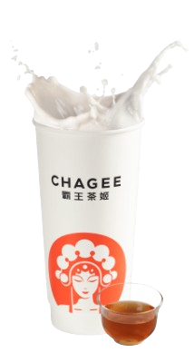
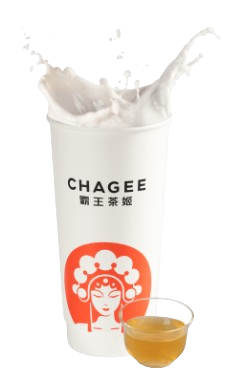
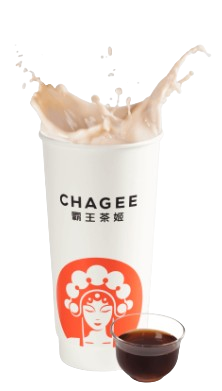

-

花田乌龙
White Peach Oolong Milk Teaa
花田乌龙奶茶结合了白色和平的甜味和乌龙茶的强烈烘烤，是一天中任何时候都可以享用的绝佳饮料。
-

伯牙绝弦
Jasmine Milk Green Tea
品尝马来西亚最好的绿茶饮料和茉莉花绿奶茶，闻一闻茉莉花的芳香。
-

柑儒以沫
Yunan Puer Milk Tea
使用从云南青翠的田野的普洱茶叶制成。茶和牛奶的味道完美融合，大大减少了苦味，并带出其甜美光滑的味道。